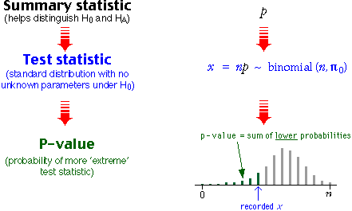

P-value for a one-tailed test
Consider a test of the hypotheses
H0 : π = π0
HA : π < π0
where π0 is a constant of interest. The following diagram shows how the p-value is found:

Since the probabilities in one tail of the distribution are added, this is called a one-tailed test.
P-value for a two-tailed test
If the alternative hypothesis allows either high or low values of x, the test is called a two-tailed test,
H0 : π = π0
HA : π ≠ π0
The p-value is then double the smaller tail probability since values of x in both tails of the binomial distribution would provide evidence for HA.
Example
A survey of 124 companies found that 97 had their own ethics codes. Two years previously, it was believed that 72% of companies had ethics codes, so is there any evidence that the proportion has changed? This question can be expressed with the hypotheses
H0 : π = 0.72
HA : π ≠ 0.72
If the current proportion of companies with ethics codes is π = 0.72, the sampled number out of 124 would have the binomial distribution below.
There is a probability 0.0718 of getting 97 or more, but small sample numbers with ethics codes would also throw doubt on the null hypothesis, so the p-value is double the high-tail probability, 0.1436.
From the large p-value, we conclude that there is no evidence that the proportion with ethics codes has changed from its value two years ago.